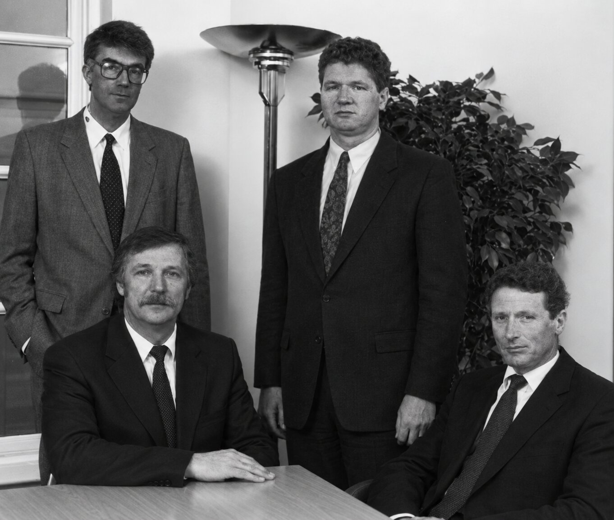
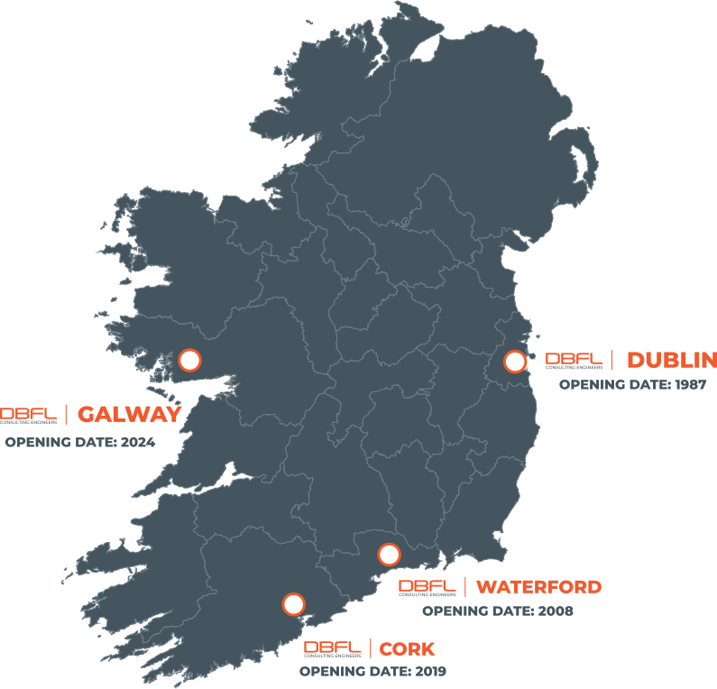
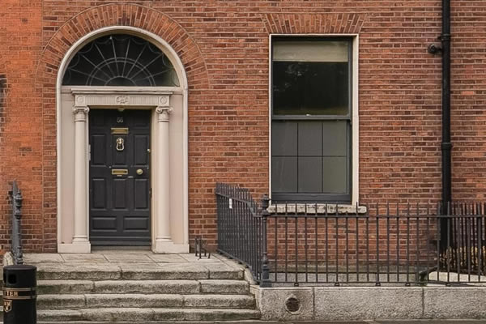
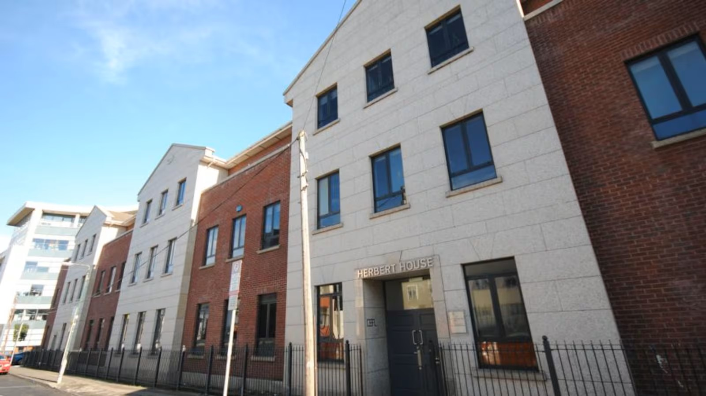
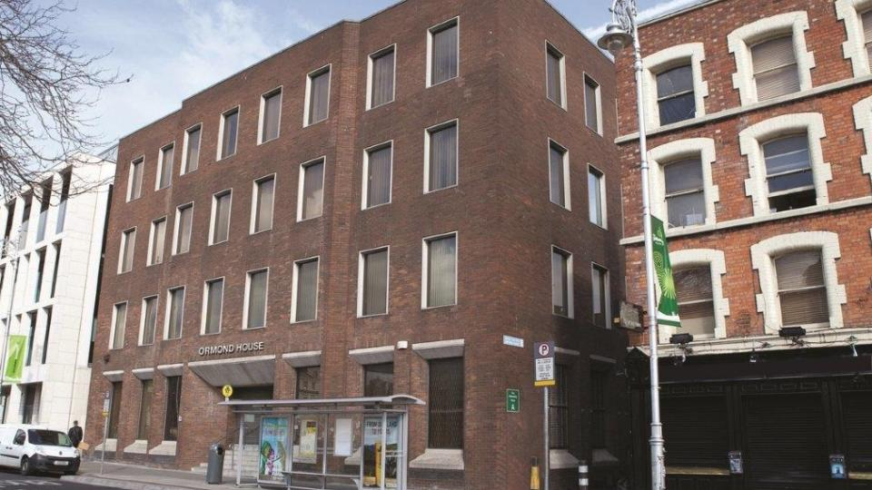
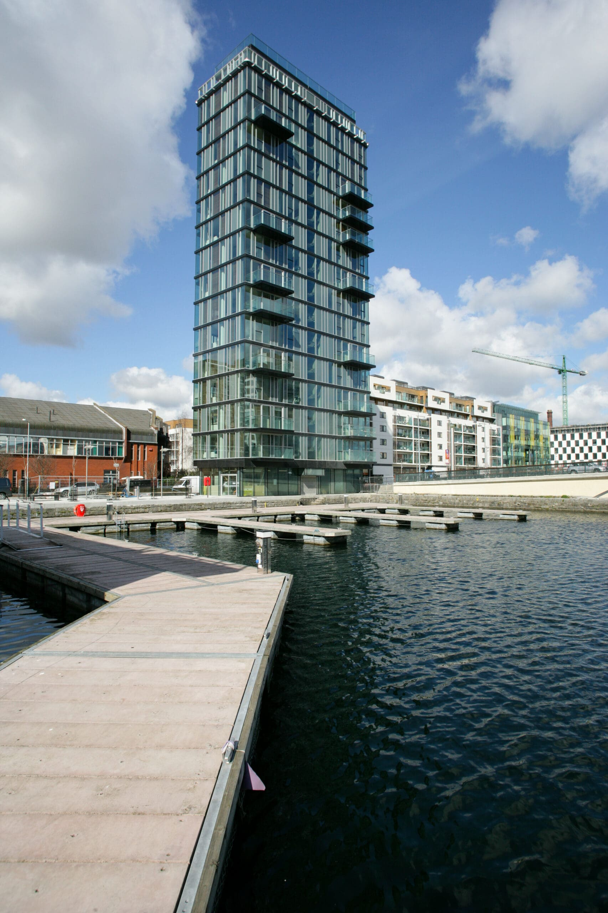
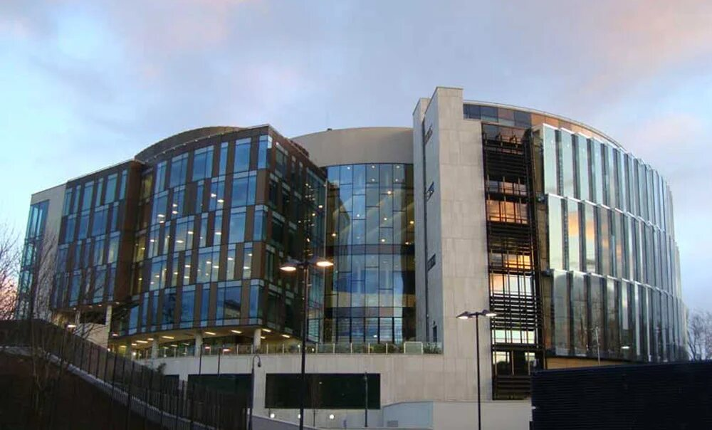
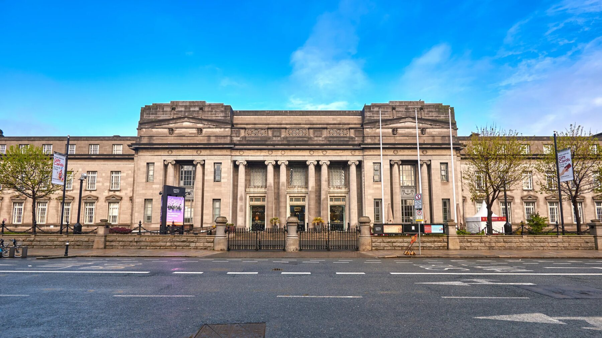

Celebrating 40 Years
Engineering
Sustainable Futures
For four decades DBFL has helped shape communities through innovative engineering, trusted partnerships and sustainable design.
Explore Our Story
Our History
DBFL began with four founders in 1987. Today, the practice brings together more than 200 people across Dublin, Waterford, Cork and Galway.
Paddy Darling, Ronald Battye, Paul Forde and Jim Lawler established DBFL during a difficult period for the industry.
The Dublin practice grew into a national presence with offices in Waterford, Cork and Galway.
Where It All Began
Following the passing of Stan Kenny and a sharp reduction in workload during the 1980s recession, four junior partners from Stanislaus Kenny & Partners chose to establish their own practice. DBFL began on a rented floor at 55 Merrion Square, where every partner took responsibility for finding work and remaining directly available to clients.

Explore Our Journey
Select a milestone to explore the people, places and projects that shaped the practice.
Before DBFL
Paddy Darling, Ronald Battye, Paul Forde and Jim Lawler were junior partners in Stanislaus Kenny & Partners from the early 1980s.
A National Practice
DBFL’s national footprint grew from Dublin to Waterford, Cork and Galway while the company retained the accessible, hands-on culture established by its founders.

From the Archive




Landmark Projects

Dublin’s first residential tower and a milestone in DBFL’s expanding portfolio.

A prominent civic project reflecting the practice’s growing structural expertise.

Engineering work supporting one of Ireland’s leading cultural institutions.
The People Behind DBFL
Each partner took responsibility for finding clients and building trusted relationships.
Clients received direct access to experienced leaders and practical advice.
Experienced input remained close to every project and every client.
The practice adapted its disciplines, locations and services as Ireland changed.
Looking Forward
Innovation, sustainability and the next generation of engineering talent will shape DBFL’s next chapter.
Back to Top